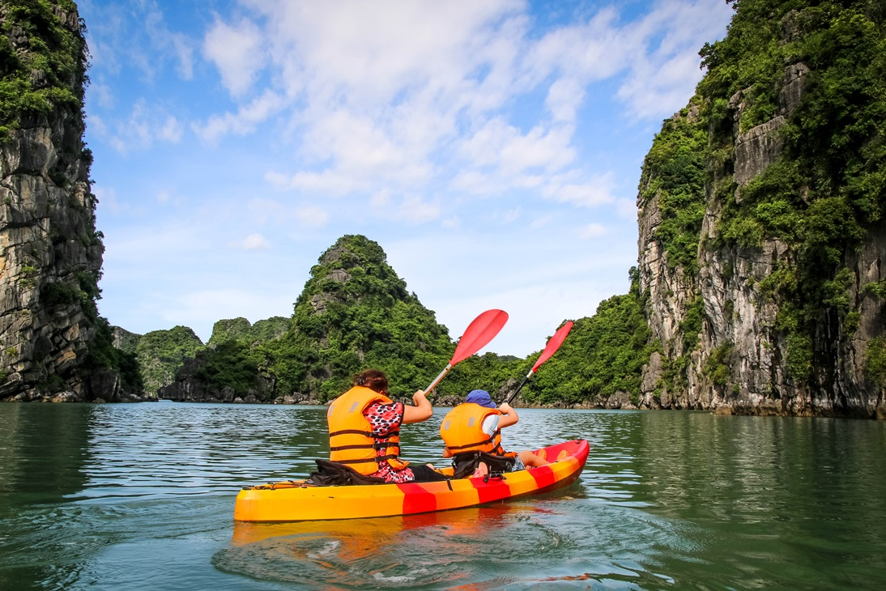
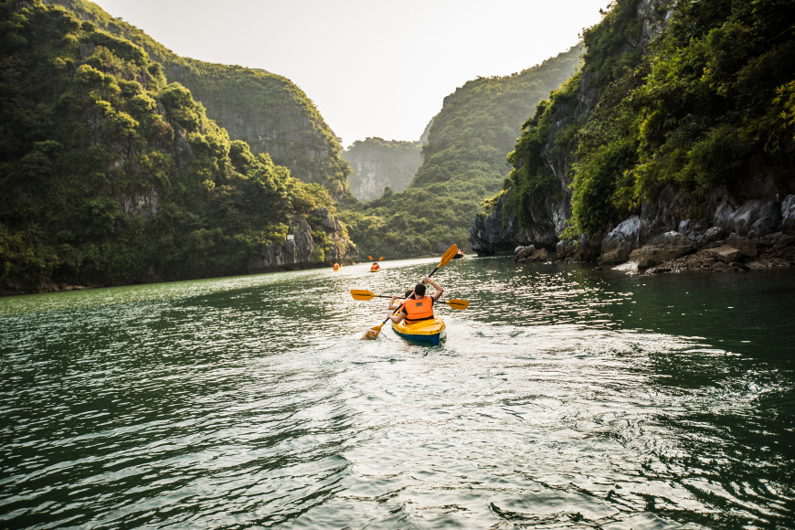

Ha Long Kayaking: A World-Favorite Experience
Kayaking in Ha Long Bay and Lan Ha Bay has been recognized as one of the world's top 25 most loved travel experiences, according to Tripadvisor's annual Travelers’ Choice Best of the Best Things to Do awards.

Ranked third on the list, this must-try activity attracts tourists with its unique opportunity to explore the stunning beauty of Ha Long Bay from a closer perspective. Unlike large cruise ships, kayaking allows visitors to glide across the peaceful turquoise waters, navigating between the towering limestone mountains that rise from the sea. Even for first-time kayakers, the experience is both safe and exhilarating, with medium-sized double kayaks offered for all guests.

For seasoned kayakers, Ha Long Bay presents a special destination to indulge their passion, offering the chance to race through hidden grottos and discover tranquil lagoons. Lan Ha Bay, Ha Long Bay, and Dau Be Island offer crystal-clear waters, smooth white sandy beaches, and stunning rock formations, providing a serene and less crowded experience for adventurers.